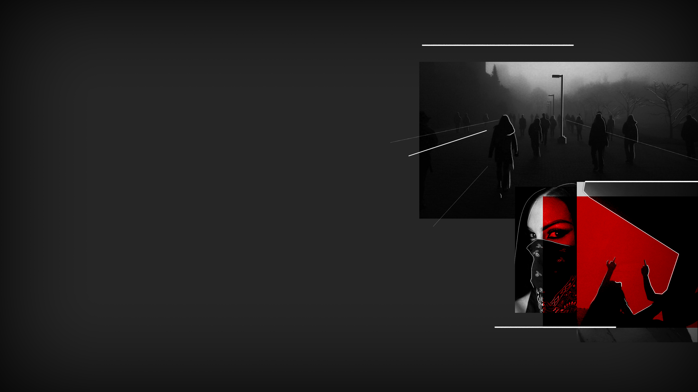

SPLITTED
SPLITTED

May 13th, 6.07 pm - Road to the Mother Gloom’s Sacred Church
The function is held on the 106th floor of the 97th skyscraper. It is four bridges far from our house. We meet at crossroad between the 104th and the 98th: I see Lisa entering the bridge followed by a crowd of people.
«I'm impressed.» I tell her, nodding at all the people around her - at least 30 young submitians.
«I'm not» she answers «I knew you'd come eventually.»
We set out to the church, and along the way many people join us.